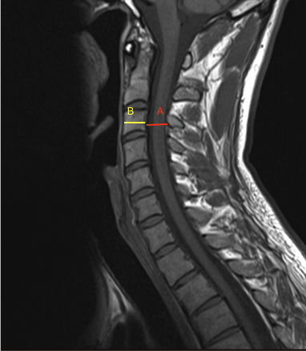

Adapted from: Di Muzio B, Normal cervical spine MRI. Case study, Radiopaedia.org (Accessed on 17 Dec 2025) https://doi.org/10.53347/rID-38418
1) Description of Measurement
The Pavlov–Torg ratio, also known as the canal–body ratio, is a dimensionless measurement used to assess cervical spinal canal stenosis by comparing the sagittal diameter of the spinal canal to the sagittal diameter of the corresponding vertebral body at the same level.
Originally described for lateral radiographs, this ratio can be accurately adapted to MRI, where it benefits from improved visualization of both bony and soft-tissue boundaries. The ratio minimizes errors from patient size and image magnification and serves as a screening tool for congenital or acquired cervical stenosis, which predisposes patients to cervical myelopathy and spinal cord injury.
2) Instructions to Measure
3) Normal vs. Pathologic Ranges
Key points:
4) Important References
Pavlov H, Torg JS, Robie B, Jahre C. Cervical spinal stenosis: determination with vertebral body ratio method. Radiology. 1987 Sep;164(3):771-5. doi: 10.1148/radiology.164.3.3615879.
Lamothe G, Muller F, Vital JM, et al. Evolution of spinal cord injuries due to cervical canal stenosis without radiographic evidence of trauma (SCIWORET): a prospective study. Ann Phys Rehabil Med. 2011 Jun;54(4):213-24. English, French. doi: 10.1016/j.rehab.2011.02.003. Epub 2011 Mar 21.
Nouri A, Montejo J, Sun X, et al. Cervical Cord-Canal Mismatch: A New Method for Identifying Predisposition to Spinal Cord Injury. World Neurosurg. 2017 Dec;108:112-117. doi: 10.1016/j.wneu.2017.08.018. Epub 2017 Aug 12.
Boden SD, McCowin PR, Davis DO, et al. Abnormal magnetic-resonance scans of the cervical spine in asymptomatic subjects. A prospective investigation. J Bone Joint Surg Am. 1990 Sep;72(8):1178-84.
5) Other info....
The Pavlov–Torg ratio is a screening tool, not a definitive diagnostic measure
MRI provides superior assessment by incorporating:
A low ratio does not guarantee symptoms; many asymptomatic patients have ratios ≤ 0.7
Clinical correlation is essential and should include:
The ratio is especially useful in: